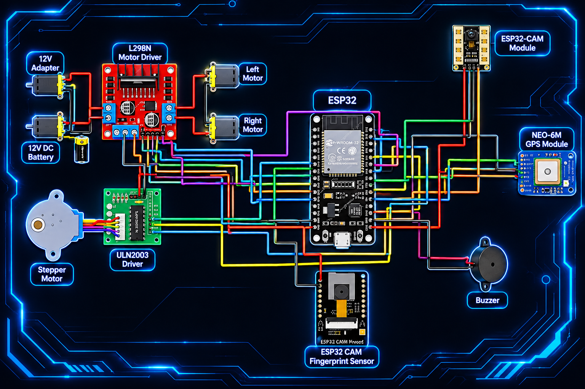

Disaster rescue rover · Mini project 2025-2026
A disaster rescue rover that detects survivors with a mmWave radar sensor, streams live video, tracks its GPS position and sounds an alert, all controlled from a Blynk app and a web dashboard.
Earthquakes, floods and building collapses leave survivors trapped where rescuers cannot safely go. Rescue Guardian goes in first. An ESP32 reads a DFRobot C4001 human presence sensor and a GPS module, an ESP32-CAM streams live video, and a buzzer gives instant audio feedback when someone is detected. Operators watch the data and drive the rover from a Blynk app or a web dashboard.

| Module | Signal | ESP32 GPIO |
|---|---|---|
| L298N (right motors) | ENA, IN1, IN2 | 25, 26, 27 |
| L298N (left motors) | ENB, IN3, IN4 | 14, 18, 19 |
| Stepper driver (ULN2003) | IN1, IN2, IN3, IN4 | 32, 33, 21, 22 |
| Buzzer | Positive | 15 |
| C4001 radar (UART) | RX, TX | 34, 13 |
| GPS NEO-6M (UART) | RX, TX | 5, 4 |
Several pins were reassigned during testing to remove pin conflicts, since the ESP32 has limited free GPIOs for this many modules.
Power and protection
| Part | What it does |
|---|---|
| 12 V battery | Powers the L298N motor driver directly |
| Regulator / buck converter | Steps 12 V down to 5 V or 3.3 V for the ESP32 and sensors |
| L298N flyback diodes | Absorb voltage spikes from the motors |
| Capacitors, resistors, battery management | Protect against electrical faults and extend reliability |
| Common ground | Gives every module the same reference voltage |
Blynk app controls
| Control | Virtual pin | Action |
|---|---|---|
| Forward / Reverse | V1 / V2 | Drive straight |
| Forward right / left | V3 / V4 | Turn while moving forward |
| Reverse right / left | V5 / V6 | Turn while reversing |
| Stop | V7 | Stop both sides |
| Speed slider | V8 | Set motor speed |
| Camera rotate | V9 | Stepper left, right or stop |
| C4001 on / off | V10 / V11 | Enable or disable the sensor |
| Location | V12 / V13 | Latitude and longitude sent when a person is detected |
Web interface
The ESP32 hosts a web page on the local network that refreshes every second. It shows whether a human is detected, not detected or the sensor is off, along with the GPS position, and also gives the same data as JSON at /status. The ESP32-CAM serves its own page with the live stream, a snapshot link and a flash switch.